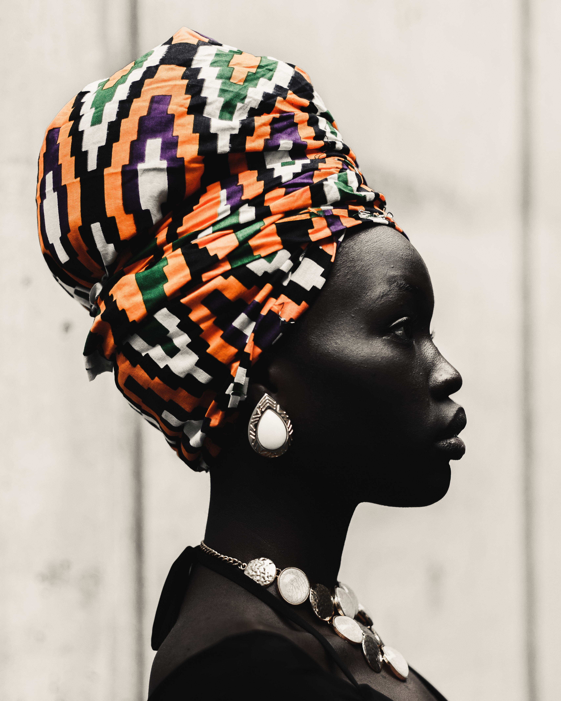

Interests

I love nature... It's fascinating and mind-blowing. You never know what you'll find lurking around in the forest 💭 below are some of my interests:
- Art
- Traveling
- History 
A lovely piece of artwork
Not much to say about it but it's inspiratingh and the story is just beautiful


well as we know i believe the gif here would do a mini explanation cuz like i said i am an introvert so you cant really expect any travelling experience from this profile
THIS PICTURE DEPICT THE HISTORY OF A NIGERIAN WOMAN. NOT MUCH IF YOU ASK ME CAUSE IT
DOESN'T REALLY EXPLAIN IT ALL BUT I HOPE YOU GET WHAT I'M TRYING TO SAY 🙂🙂🙂🙂🙂🙂🙂🙂